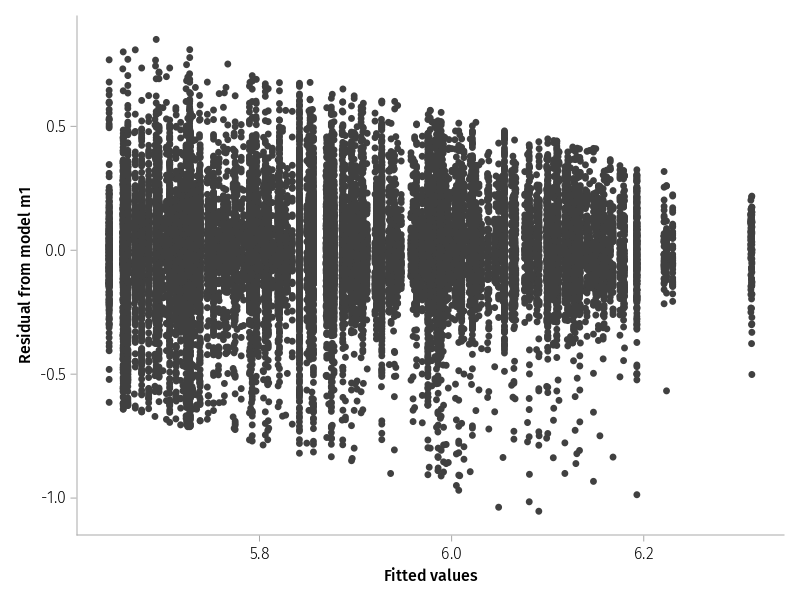
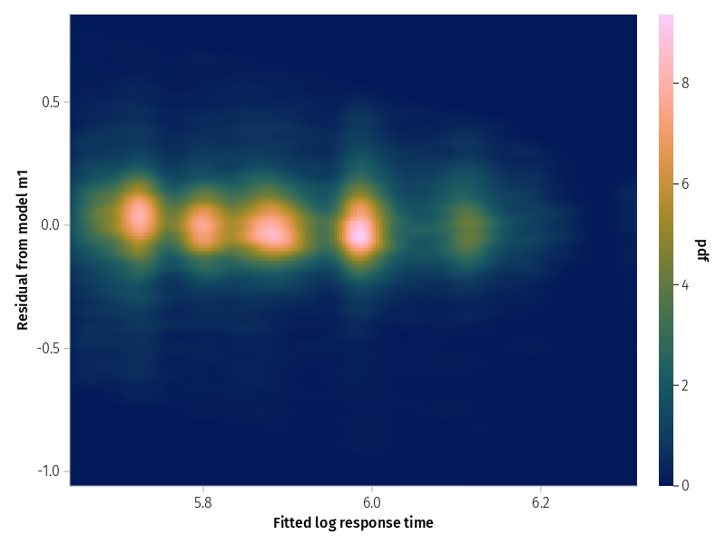
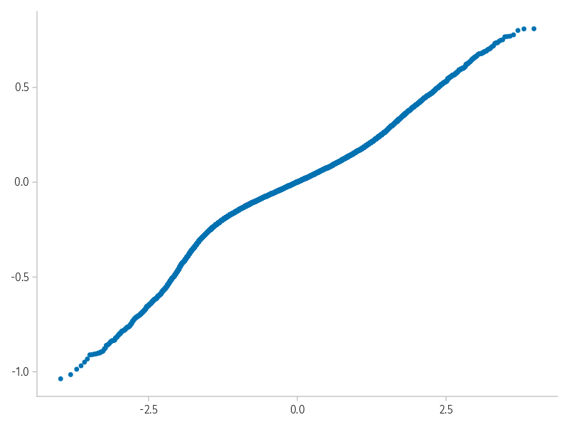
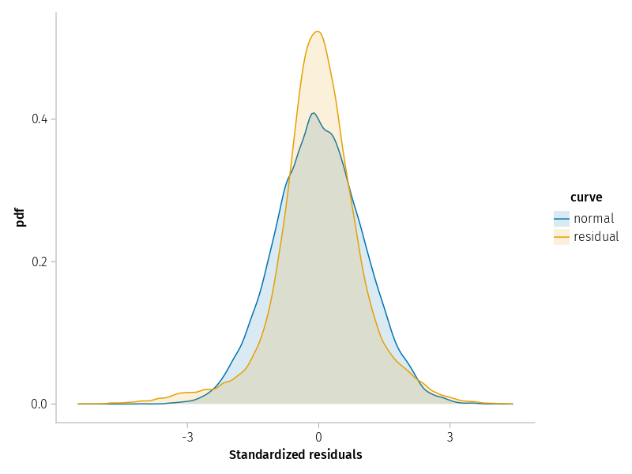
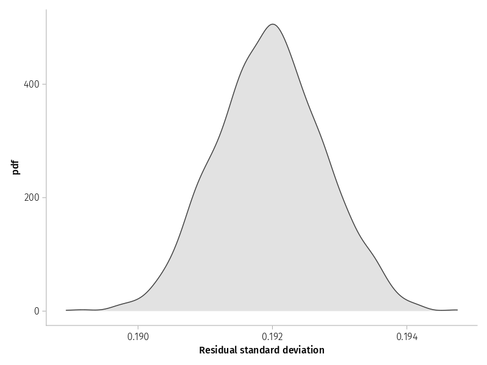

Phillip Alday, Douglas Bates, Reinhold Kliegl, and Julius Krumbiegel
Published
2022-07-02
Background
We take the kwdyz11.arrow dataset (Reinhold Kliegl et al. 2010) from an experiment looking at three effects of visual cueing under four different cue-target relations (CTRs). Two horizontal rectangles are displayed above and below a central fixation point or they displayed in vertical orientation to the left and right of the fixation point. Subjects react to the onset of a small visual target occuring at one of the four ends of the two rectangles. The target is cued validly on 70% of trials by a brief flash of the corner of the rectangle at which it appears; it is cued invalidly at the three other locations 10% of the trials each.
We specify three contrasts for the four-level factor CTR that are derived from spatial, object-based, and attractor-like features of attention. They map onto sequential differences between appropriately ordered factor levels. At the level of fixed effects, there is the noteworthy result, that the attraction effect was estimated at 2 ms, that is clearly not significant. Nevertheless, there was a highly reliable variance component (VC) estimated for this effect. Moreover, the reliable individual differences in the attraction effect were negatively correlated with those in the spatial effect.
Unfortunately, a few years after the publication, we determined that the reported LMM is actually singular and that the singularity is linked to a theoretically critical correlation parameter (CP) between the spatial effect and the attraction effect. Fortunately, there is also a larger dataset kkl15.arrow from a replication and extension of this study (R. Kliegl, Kushela, and Laubrock 2015), analyzed with kkl15.jl notebook. The critical CP (along with other fixed effects and CPs) was replicated in this study.
A more comprehensive analysis was reported in the parsimonious mixed-model paper (Bates et al. 2015). Data and R scripts are also available in R-package RePsychLing. In this and the complementary kkl15.jl scripts, we provide some corresponding analyses with MixedModels.jl.
We recommend to code the levels/units of random factor / grouping variable not as a number, but as a string starting with a letter and of the same length for all levels/units.
We also recommend to sort levels of factors into a meaningful order, that is overwrite the default alphabetic ordering. This is also a good place to choose alternative names for variables in the context of the present analysis.
The LMM analysis is based on log-transformed reaction times lrt, indicated by a boxcox() check of model residuals. With the exception of diagnostic plots of model residuals, the analysis of untransformed reaction times did not lead to different results and exhibited the same problems of model identification (see Reinhold Kliegl et al. 2010).
Comparative density plots of all response times by cue-target relation, Figure 1, show the times for valid cues to be faster than for the other conditions.
Figure 1: Comparative density plots of log reaction time for different cue-target relations.
An alternative visualization without overlap of the conditions can be accomplished with ridge plots.
To be done
For the next set of plots we average subjects’ data within the four experimental conditions. This table could be used as input for a repeated-measures ANOVA.
dat_subj =combine(groupby(dat, [:Subj, :CTR]),:rt => length =>:n,:rt => mean =>:rt_m,:lrt => mean =>:lrt_m,)
Figure 2: Comparative boxplots of log response time by cue-target relation.
Mean of log reaction times for four cue-target relations. Targets appeared at (a) the cued position (valid) in a rectangle, (b) in the same rectangle cue, but at its other end, (c) on the second rectangle, but at a corresponding horizontal/vertical physical distance, or (d) at the other end of the second rectangle, that is \(\sqrt{2}\) of horizontal/vertical distance diagonally across from the cue, that is also at larger physical distance compared to (c).
A better alternative to the boxplot is a dotplot. It also displays subjects’ condition means.
LMM m1 is not fully supported by the data; it is overparameterized. This is also visible in the PCA: only three, not four PCS are needed to account for all the variance and covariance in the random-effect structure. The problem is the +.93 CP for spatial sod and attraction dod effects.
first(MixedModels.PCA(m1))
Principal components based on correlation matrix
(Intercept) 1.0 . . .
CTR: sod 0.48 1.0 . .
CTR: dos -0.24 -0.15 1.0 .
CTR: dod 0.3 0.93 -0.43 1.0
Normalized cumulative variances:
[0.5886, 0.8095, 1.0, 1.0]
Component loadings
PC1 PC2 PC3 PC4
(Intercept) -0.4 0.04 0.9 0.17
CTR: sod -0.6 0.4 -0.16 -0.68
CTR: dos 0.33 0.91 0.06 0.23
CTR: dod -0.61 0.08 -0.41 0.68
Diagnostic plots of LMM residuals
Do model residuals meet LMM assumptions? Classic plots are
Residual over fitted
Quantiles of model residuals over theoretical quantiles of normal distribution
Residual-over-fitted plot
The slant in residuals show a lower and upper boundary of reaction times, that is we have have too few short and too few long residuals. Not ideal, but at least width of the residual band looks similar across the fitted values, that is there is no evidence for heteroskedasticity.
Code
CairoMakie.activate!(; type="png")set_aog_theme!()draw(data((; f=fitted(m1), r=residuals(m1))) *mapping(:f =>"Fitted values", :r =>"Residual from model m1") *visual(Scatter);)

Figure 3: Residuals versus the fitted values for model m1 of the log response time.
With many observations the scatterplot is not that informative. Contour plots or heatmaps may be an alternative.
Code
CairoMakie.activate!(; type="png")draw(data((; f=fitted(m1), r=residuals(m1))) *mapping(:f =>"Fitted log response time", :r =>"Residual from model m1" ) *density();)

Figure 4: Heatmap of residuals versus fitted values for model m1
Q-Q plot
The plot of quantiles of model residuals over corresponding quantiles of the normal distribution should yield a straight line along the main diagonal.
qqnorm(residuals(m1); qqline=:none)

Observed and theoretical normal distribution
The violation of expectation is again due to the fact that the distribution of residuals is much narrower than expected from a normal distribution, as shown in Figure 5. Overall, it does not look too bad.
Code
let n =nrow(dat) dat_rz =DataFrame(; value=vcat(residuals(m1) ./std(residuals(m1)), randn(n)), curve=vcat(fill.("residual", n), fill.("normal", n)), )draw(data(dat_rz) *mapping(:value =>"Standardized residuals"; color=:curve) *density(; bandwidth=0.1); )end

Figure 5: Kernel density plot of the standardized residuals from model m1 compared to a Gaussian
Conditional modes
Now we move on to visualizations that are based on model parameters and subjects’ data, that is “predictions” of the LMM for subject’s GM and experimental effects. Three important plots are
Overlay
Caterpillar
Shrinkage
Overlay
The first plot overlays shrinkage-corrected conditional modes of the random effects with within-subject-based and pooled GMs and experimental effects.
To be done
Caterpillar plot
The caterpillar plot, Figure 6, also reveals the high correlation between spatial sod and attraction dod effects.
Figure 6: Prediction intervals on the random effects for Subj in model m1
Shrinkage plot
Figure 7 provides more evidence for a problem with the visualization of the spatial sod and attraction dod CP. The corresponding panel illustrates an implosion of conditional modes.
nrow(dat2) # 2500 estimates for each of 15 model parameters
37500
Shortest coverage interval
The upper limit of the interval for the critical CP CTR: sod, CTR: dod is hitting the upper wall of a perfect correlation. This is evidence of singularity. The other intervals do not exhibit such pathologies; they appear to be ok.
Code
DataFrame(shortestcovint(samp))
15 rows × 5 columns
type
group
names
lower
upper
String
String?
String?
Float64
Float64
1
β
missing
(Intercept)
5.89917
5.97256
2
β
missing
CTR: sod
0.0719311
0.104588
3
β
missing
CTR: dos
0.0251179
0.0491673
4
β
missing
CTR: dod
-0.0207178
0.00268305
5
σ
Subj
(Intercept)
0.116565
0.16857
6
σ
Subj
CTR: sod
0.0455181
0.0708033
7
ρ
Subj
(Intercept), CTR: sod
0.243722
0.712955
8
σ
Subj
CTR: dos
0.00964295
0.0408824
9
ρ
Subj
(Intercept), CTR: dos
-0.921181
0.247026
10
ρ
Subj
CTR: sod, CTR: dos
-0.724728
0.477646
11
σ
Subj
CTR: dod
0.0144133
0.0385057
12
ρ
Subj
(Intercept), CTR: dod
-0.13249
0.740379
13
ρ
Subj
CTR: sod, CTR: dod
0.576369
0.999995
14
ρ
Subj
CTR: dos, CTR: dod
-0.885691
0.436041
15
σ
residual
missing
0.190559
0.193644
Comparative density plots of bootstrapped parameter estimates
Residual
Code
draw(data(@subset(dat2, :type=="σ", ismissing(:names))) *mapping(:value =>"Residual standard deviation") *density();)

Figure 8: ?(caption)
Fixed effects (w/o GM)
The shortest coverage interval for the GM ranges from 376 to 404 ms. To keep the plot range small we do not inlcude its density here.
Figure 11: Comparative density plots of the correlation parameters for model m1
Two of the CPs stand out positively. First, the correlation between GM and the spatial effect is well defined. Second, as discussed throughout this script, the CP between spatial and attraction effect is close to the 1.0 border and clearly not well defined. Therefore, this CP will be replicated with a larger sample in script kkl15.jl(R. Kliegl, Kushela, and Laubrock 2015).
Kliegl, Reinhold, Ping Wei, Michael Dambacher, Ming Yan, and Xiaolin Zhou. 2010. “Experimental Effects and Individual Differences in Linear Mixed Models: Estimating the Relationship Between Spatial, Object, and Attraction Effects in Visual Attention.”Frontiers in Psychology. https://doi.org/10.3389/fpsyg.2010.00238.
Kliegl, R., J. Kushela, and J. Laubrock. 2015. “Object Orientation and Target Size Modulate the Speed of Visual Attention.” Department of Psychology, University of Potsdam.